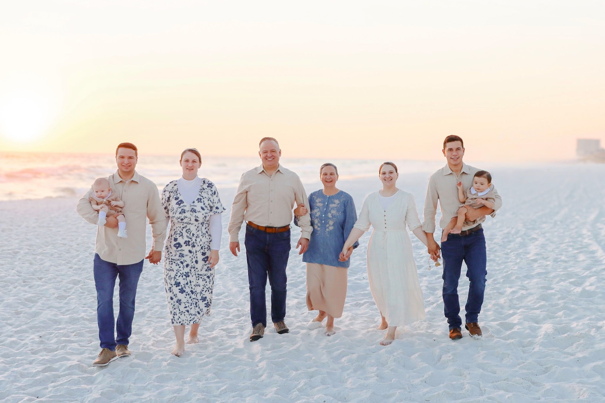
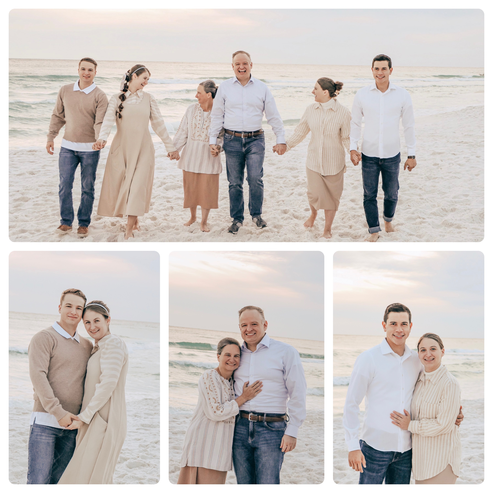
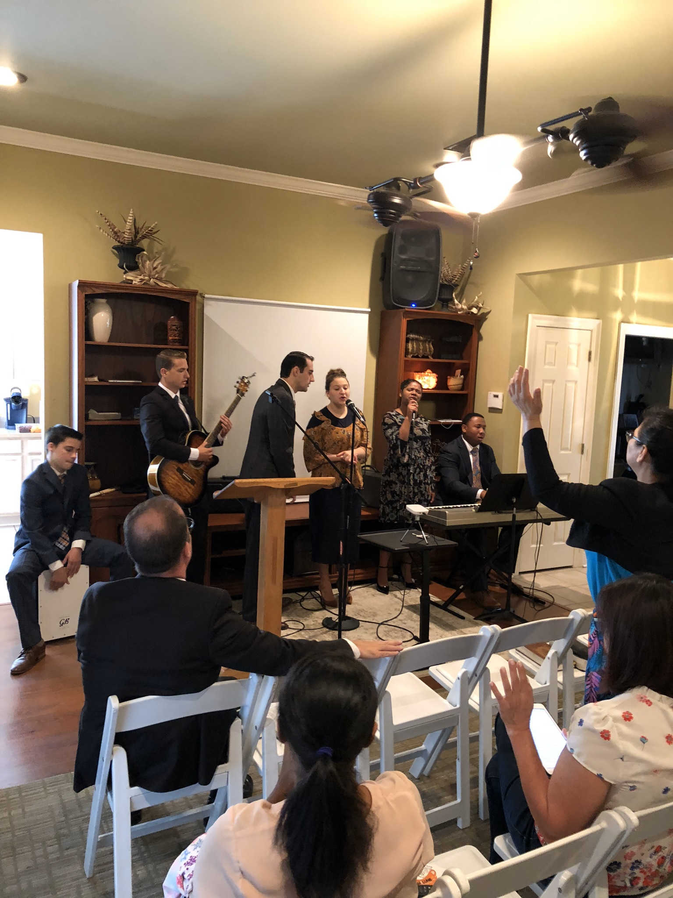
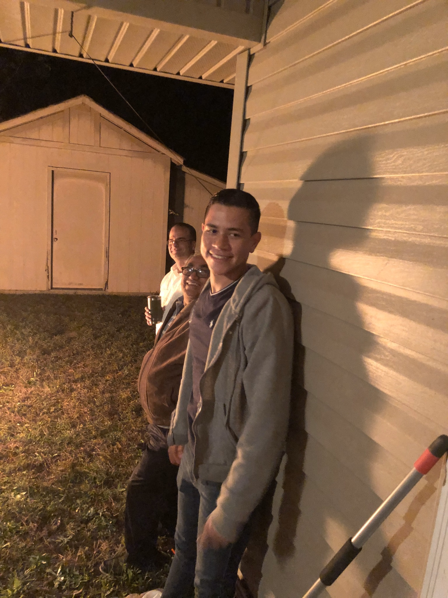
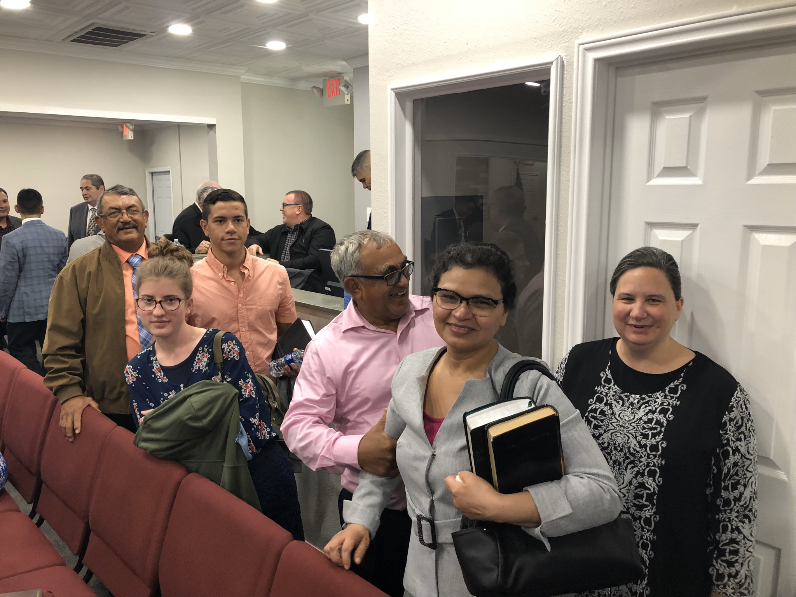
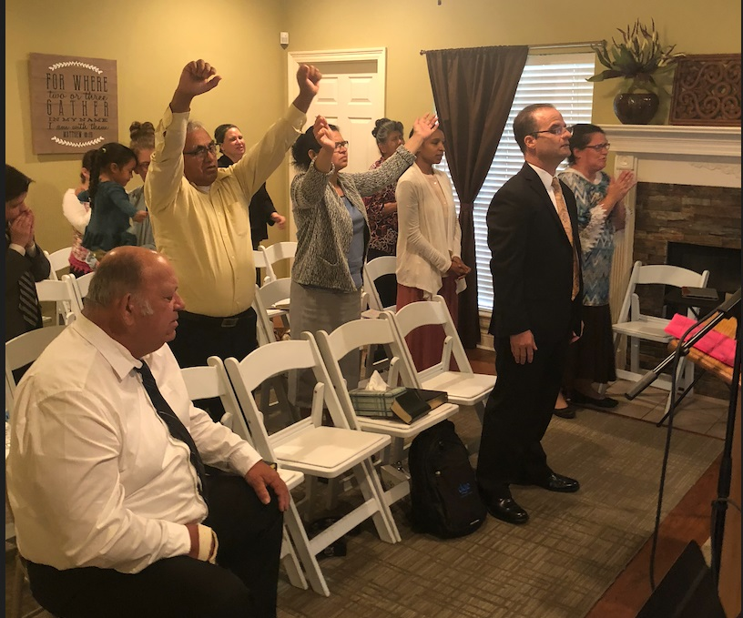
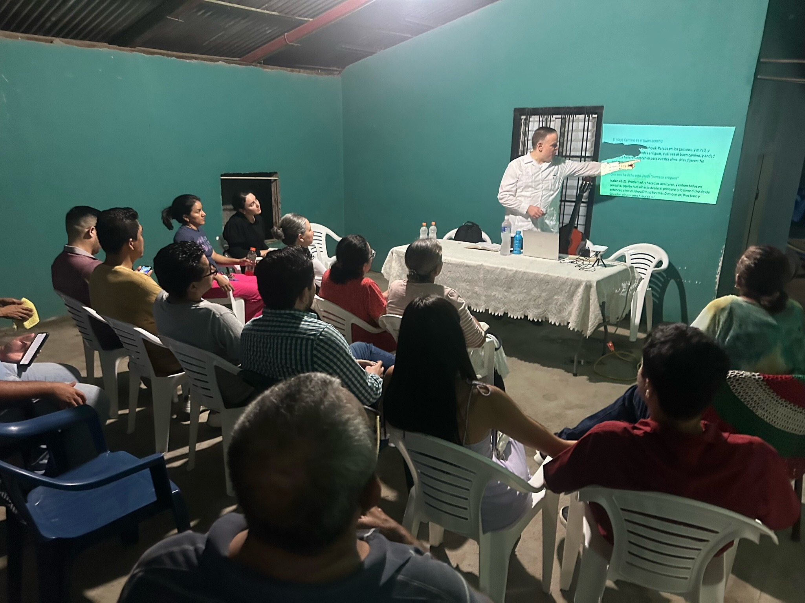

La familia Blanchard
Conozca nuestro ministerio y testimonio


El hermano David Blanchard y su esposa, la hermana Shontel, han servido fielmente a Dios desde su conversión en 1997. Han ministrado bajo la cobertura del pastor S. D. Schwing en Lafayette, Louisiana.
Tienen dos hijos, Jude y Lauren, quienes están casados con Brooklyn y Daniel. El hermano Blanchard fue ordenado ministro en septiembre de 2005 y ha servido en el ministerio apostólico por más de 20 años.
Experiencia Ministerial
- Inicio de misión en Baton Rouge, Louisiana, EE.UU. (2005–2011)
- Facultad del Instituto ICAT (2012–2019)
- Inicio de misión en Covington, Louisiana (2017–2020)
- Superintendente de Escuela Dominical (2014–2024)
- Ministro de alcance en Lafayette, LA (2011–2024)
- Misión en San Pedro Sula, Honduras (2023–Presente)

Covington, Louisiana (2018–2019)
La familia Blanchard formó parte del equipo ministerial en el trabajo de alcance.
- Colaboraron con el hermano Chris y la hermana Kimberly Leblanc
- Conectaron con familias como Tony y Reina Chávez



Servicio y Alcance
Dios ha abierto puertas para ministrar en diferentes comunidades, llevando el evangelio a muchas personas.

San Pedro Sula (2023–Presente)
La misión en Honduras inició con estudios bíblicos y ha crecido con la ayuda de nuevos creyentes.
- Familias como Leo e Iris apoyan activamente la misión
- Apoyo continuo de la iglesia en Estados Unidos
- Nuevos bautismos y crecimiento espiritual